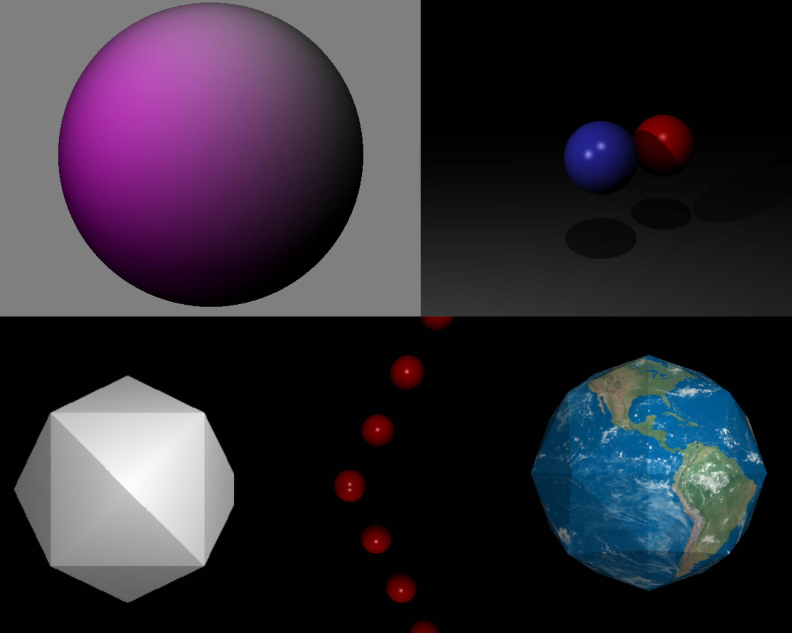
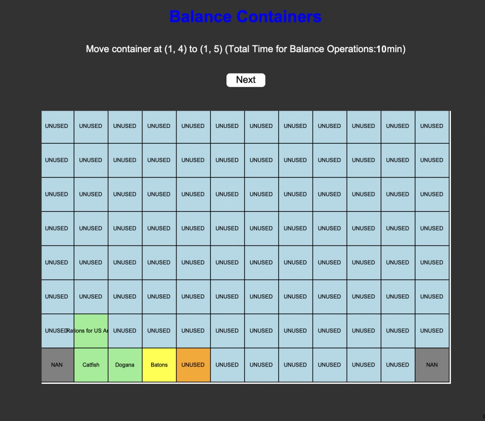
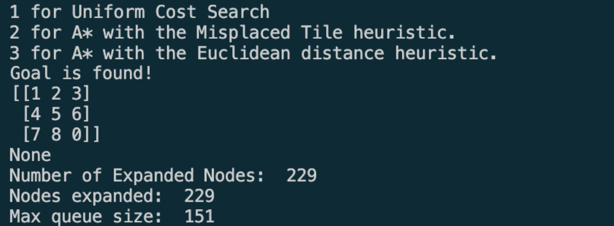
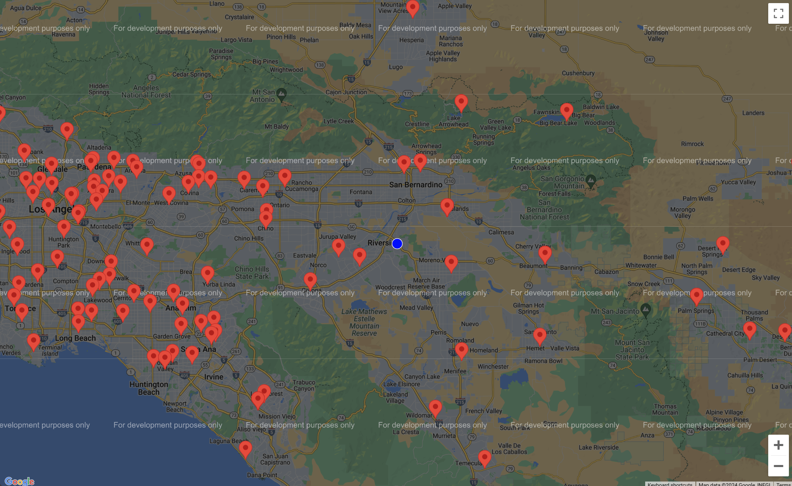

Ray Tracer
C++, Valgrind, GDB
Due to my professor's policy, my ray tracer is not publicly available on Github, contact me for access to the Github link.

A ray tracer for rendering from 3D objects to onto a 2D viewing plane image pixel-by-pixel, with a Lambertian shading model(diffuse, specular, ambient), supporting shadows, reflectivity and transparent objects(refraction), and texture mapping. Works with spheres, triangles, planes, and triangle meshes.
Packaroo Express!
Python, Tkinter
A software solution designed for port crane operators to efficiently load, unload, and balance a ship. Uses A* search and Manhattan distance heuristic in order to find an optimal sequence of container moves in order to minimize the time of crane movement at a port.
N-Puzzle Solver
Python(numpy)
View on Github
Based on the 8-Puzzle Tile Game to move around 1 tile per action to reorder them in number order, with one empty spot. Used different heuristics to guide the solver towards the next move.
BearCare
Python(pandas), Google Maps API, NextJS, TailwindCSS
A centralized website made with NextJS and TailwindCSS, for people to select their insurance companies, and find hospitals near them based on their location covered by their insurance. Used Python to extract and organize data from websites, and Google Maps API to locate current location and hospital coordinates.
My Favorite Story
C++, CMake, Valgrind
View on Github
A text-based role-play game in the terminal where you can choose your character, genre, and make your choices!
Canvas Web Scraper (CSV to CSV Input)
Python3, libraries used: pandas, math
View on Github
A data management tool I created to facilitate grade input, into the Canvas Learning Management System, to enter data from one CSV file into another CSV!
Duck Games
HTML, CSS, JS, Figma, Unity, Django
A series of 3 mini games surrounded around ducks together on a website with working user authentication, made in 24 hours during UCR's Rose Hack!
Cutie Saves The World
Unity, Asprite, PixelArt
A 2D Platformer game built in Unity, with the main character Cutie! All of the colors, designs, background assets were designed by us-- made in 12 hours during UCR's Cutie Hack!